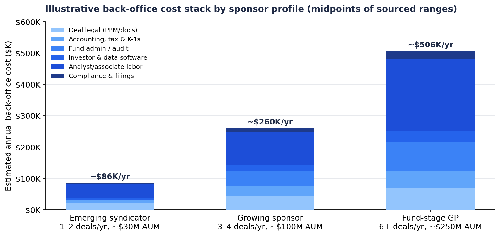

A Back-Office Breakdown
Summary. Nobody publishes a benchmark for GP back-office spend. What follows is assembled from vendor price lists, fund-formation guides, compensation surveys, and the few sponsors who disclose their own cost structure. Put together, the picture is consistent enough to be useful.
A single-asset syndication costs about $25K–$60K to paper up front, then $5K–$15K a year in accounting, tax and K-1s for as long as it's held. A blind-pool fund adds $50K–$90K a year in administration, audit and tax before anyone draws a salary. Software runs from under $1K to $36K a year depending on how institutional the investor portal needs to look. And the biggest line by far is labor: one acquisitions analyst is $85K–$135K loaded, and a meaningful share of that person's week goes to extracting numbers from PDFs.
The pattern that matters: these costs are mostly fixed. Legal, audit and administration do not get cheaper because the deal is smaller. A $10M fund spends 26–44% of its management fee on administration alone; a $25M fund spends 10–17%. Below roughly $100M of AUM, back office is a regressive tax on the sponsor.

Every Reg D syndication needs a securities package — PPM or equivalent disclosures, operating agreement, subscription docs, Form D, and blue-sky notices in each state where investors live. Specialist securities firms quote a complete package at $12K–$25K in 2026 (Moschetti Law; PPM Lawyers puts its own flat fee at $10.7K–$17.5K). The broader market for a single-asset syndication runs $15K–$40K depending on complexity and timeline. Fund, parallel or offshore structures move to $20K–$40K+, and large-firm engagements reach $50K–$75K. Hourly rates for securities counsel run $450–$1,000.
Blind-pool fund formation is a different tier: $30K to $75K+ for sponsors raising $20M or more (CRE.law), plus $50K–$100K in additional legal if institutional LPs negotiate side letters. Several sources note that staying single-asset instead of forming a fund saves $10K–$30K per offering in legal — the trade-off being a fresh raise for every deal.
Two things sit on top of this. Property-side legal (PSA, lender counsel, title) is separate. And broken-deal cost — legal and diligence spend on deals that die — is a real recurring expense that the LPA either pushes to the fund or leaves with the GP. For a single-asset syndicator with no fund, it's the GP's by default.
Each entity needs a return and each investor needs a K-1, every year, for the life of the deal. A straightforward single-entity SPV runs $2K–$5K in federal and state tax prep; add multiple investor classes, multi-state filings or foreign investors and it's $8K–$15K. K-1s are $100–$300 each. Bookkeeping and quarterly financials are $300–$800 a month. Some states pile on: California charges an $800 minimum franchise tax per LLC regardless of income (PoliBit, May 2026).
For a 40-investor deal that's $4K–$12K a year in K-1s alone. A sponsor with five active deals and 200 investor positions is carrying $30K–$70K a year in entity accounting and tax before any fund-level audit. And it's the line LPs care most about: 31% of LP complaints about fund operations in EY's 2024 survey were about late or inaccurate tax documents.
This kicks in when a sponsor moves from one-off syndications to a pooled vehicle, or when institutional LPs want a third party maintaining NAV and capital accounts. Total administration for an emerging-manager fund — administrator, audit and tax — runs $52K–$87K a year (Angel Investors Network, Mar 2026). Broken out: administrator base fees of $30K–$60K plus $1K–$3K per LP per year, so $50K–$80K for a 20-LP fund and $75K–$120K for 50 LPs (Praxis Rock). Audit is $25K and up for a simple structure.
Institutional administrators (SS&C, Citco, State Street, Gen II) price on AUM with high minimums, which is why a set of flat-fee platforms has grown up for emerging managers. The one GP disclosure worth anchoring on: Origin Investments reports fund administrative costs of 0.10%–0.20% of invested equity per year.
The 2023 SEC Private Fund Adviser Rules would have made annual audits mandatory; the Fifth Circuit vacated them in 2024. Institutional LPs kept expecting audited financials anyway, so the cost survived as a market requirement rather than a regulatory one.
Most sponsors run some mix of investor portal, CRM, data room and underwriting tool. Investor-management platforms sort into three tiers in 2026: entry (Cash Flow Portal, Homebase, InvestNext's fundraising tier) at $55–$150 a month; mid-market (InvestNext Core, Agora, AppFolio Investment Manager) at $200–$750; and institutional (Juniper Square, RealPage IMS, Yardi) at $1,000–$3,000+, with Juniper Square reported at $18K–$30K+ a year. Mid-market and up generally means a 12-month contract and 45 days to 2.6 months of implementation.
Argus Enterprise, the institutional underwriting standard, starts around $150 per user per month and exceeds $1,000 at higher tiers — and analysts still type the data in. Most sponsors underwrite in Excel, where the license is cheap and the cost is entirely analyst time.
A full stack — premium portal, CRM, email/dialer, data room — is commonly cited at $40K–$120K a year. That's a vendor's framing (Raises.com), but the component prices support the low end for anyone on Juniper Square plus HubSpot.
Blue-sky filings are $150–$300 per state per offering plus attorney time, across the 5–10 states a typical raise touches. Charging an asset-management fee can trigger state RIA registration in California, New York, Massachusetts and elsewhere, which brings an ongoing compliance program with it. KYC/AML is priced per investor and is either bundled into the platform or billed separately.
Placement fees aren't back office, but they're often the largest non-labor number a sponsor without a proprietary LP base pays: 1–5% of capital raised, 2–3% on platforms, negotiable to 1–2% for established operators. Three percent on a $10M raise is $300K — more than every other line in this note combined.
This is the largest line and the least benchmarked, because small sponsors rarely separate back-office time from their own.
An acquisitions analyst or associate in multifamily earns $86K–$134K total with 21–31% bonus (CEL & Associates/RCLCO). Glassdoor puts the average at $102K, ZipRecruiter at $87K, Salary.com at $98K for associates. Base salaries in acquisitions and capital markets rose 4–6% in 2026 (H Two National). Offshore analysts run 50–70% cheaper.
What the hours actually look like, per the software vendors who track them: an initial underwrite to indicative price is 2–4 hours; a full underwrite with market research, comps and sensitivities is 8–16 hours; and 3–5 hours of that is document extraction and data entry — rent rolls, T-12s, OMs — before any analysis happens (PropRise, 2026). At a screening pace of 10–15 OMs a week, an analyst spends 20–30 minutes per deal on data entry just to reach a kill decision. Kolena estimates the dead-deal share of that at 4–6 hours a week, or $10K–$15K per analyst per year at $50 an hour loaded.
On the investor side, Juniper Square's 2020 survey found subscription processing takes 1–4 hours per investor and 54% of managers were doing fund accounting in-house. A 100-investor raise is therefore 100–400 hours — 2.5 to 10 person-weeks — of onboarding. Quarterly reporting on a legacy process was described this month as "the first three weeks of every quarter" in reconciliation.
The chart at the top combines the midpoints of these ranges into annual estimates for three profiles. Teez's assumptions on labor allocation are stated so they can be changed.
| Emerging syndicator 1–2 deals/yr, ~$30M AUM | Growing sponsor 3–4 deals/yr, ~$100M AUM | Fund-stage GP 6+ deals/yr, ~$250M AUM | |
|---|---|---|---|
| Deal legal | $20K | $45K | $70K |
| Accounting, tax, K-1s | $12K | $30K | $55K |
| Fund admin / audit | — | $50K | $90K |
| Software | $4K | $18K | $36K |
| Analyst labor | $45K | $105K | $230K |
| Compliance & filings | $5K | $12K | $25K |
| Total | ~$86K/yr | ~$260K/yr | ~$506K/yr |
Against a 1.5% asset-management fee on those AUM levels ($450K, $1.5M, $3.75M), the stack is about 19%, 17% and 13% of fee income — before principals' pay, insurance, office, travel or marketing. The smallest sponsors pay the highest share. Excluded: placement fees, principal salaries, property management (paid at the asset), acquisition-side diligence like PCAs and Phase Is, and D&O/E&O.
Teez is an Excel-native AI underwriting platform with a done-for-you service layer: OM, T-12 and rent roll in, full multifamily model out, with assumptions tracked and the deal re-run when inputs move. It's worth being exact about which of the lines above that touches.
It doesn't touch most of them. Legal, fund admin and audit, K-1s, the investor portal, and compliance filings are unchanged — about $41K, $155K and $276K a year across the three profiles. Teez does not replace a securities attorney, an administrator or a tax preparer.
It touches the underwriting share of the labor line, which is where the hours in Section 6 live. Extraction goes from 3–5 hours per deal to under 15 minutes. A full underwrite goes from 8–16 hours to 2–4, with the analyst's time shifting from building the model to reviewing assumptions and running scenarios. Re-underwriting when a rate or rent forecast moves goes from hours-or-skipped to minutes. And dead-deal data entry — the $10K–$15K per analyst per year — goes away, because extraction costs the same whether the deal closes or dies. These are Teez's operating estimates from design-partner usage, not independent measurements; design partners should check them against their own deal logs.
In dollars, at the same $50/hr loaded rate and assuming 12 hours per full underwrite today versus 3 with Teez:
| Emerging syndicator | Growing sponsor | Fund-stage GP | |
|---|---|---|---|
| Underwriting labor today | ~$25K (or $20K–$40K outsourced) | ~$70K | ~$140K |
| With Teez | ~$6K | ~$18K | ~$36K |
| Annual saving | ~$19K–$34K | ~$52K | ~$104K |
| Share of total stack | 22–40% | ~20% | ~21% |
Three things to say about that.
The saving is about a fifth of the back-office stack in every profile. That is the honest size of the prize for underwriting software. Anyone claiming to halve a sponsor's back-office cost with an underwriting tool is counting lines the tool doesn't touch.
For the smallest sponsors the effect is different in kind. An emerging syndicator with no analyst is either underwriting as a principal — unpriced, but very real — or buying it per deal from an outsourced service. Teez's done-for-you layer competes directly with that per-deal spend, and because the output is an Excel model, it lives in the sponsor's own file rather than a vendor format.
And the larger value isn't on the cost line at all. This note measures dollars. The companion note on assumption staleness measured what a 4–8 week underwriting cycle costs in returns when the 10-year moves 98 bps and rent forecasts get revised 130 bps inside that window: 150–270 bps of levered IRR on a representative $24M deal. For a $100M-AUM sponsor doing three or four deals a year, that's a bigger number than the entire back-office budget. The labor saving pays for the software. The cycle-time reduction is why it matters.
More at teez.live.